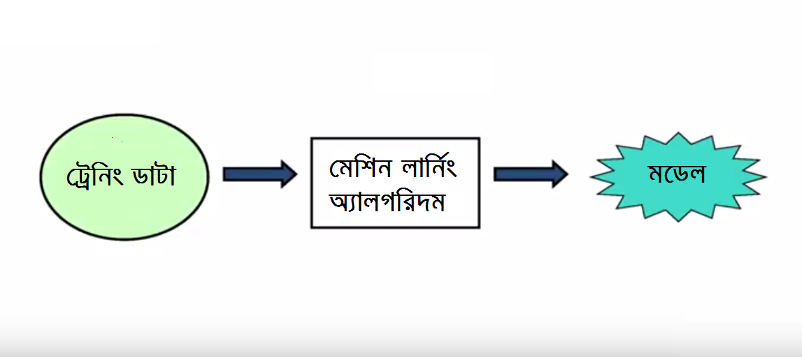
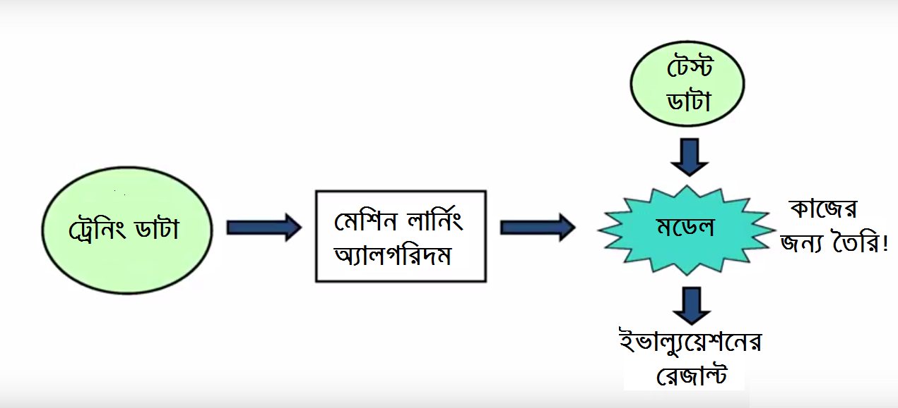
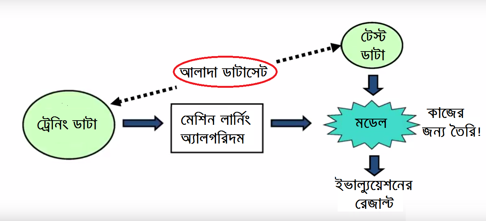
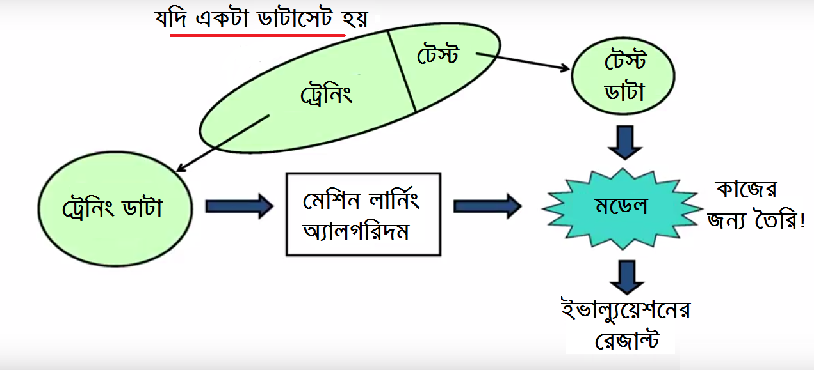

৩.৪. শুরুর ধারণা - ডাটা নিয়ে¶
শুরুর ধারণা - ডাটা নিয়ে¶
Just as electricity transformed almost everything 100 years ago, today I actually have a hard time thinking of an industry that I don’t think AI (Artificial Intelligence) will transform in the next several years.
~Andrew Ng
মেশিন লার্নিংয়ের বেসিক কনসেপ্টটা না বললেই নয়। এর কাঁচামাল হচ্ছে ডাটা। আগেই বলেছি - যতো গুড়, ততো মিষ্টি। ডাটা আসতে পারে অনেক সোর্স থেকে। ডাটাবেস, সিএসভি, টেক্সট ফাইল - নিতে পারে প্রায় সবকিছু। যতো বেশি সোর্স, প্রেডিকশন ততো ভালো। বাংলায় ঠিকমতো বলতে না পারলেও - ডাটা’র ভ্যারাইটি, কাছাকাছি গোত্রের ডাটাগুলোর ভেতরে সম্পর্ক, ওদের ‘ডেনসিটি’ আর ‘সম্পর্কিত’ ডাটার ওপর নির্ভর করে মডেলের "অ্যাক্যুরেসি"। এই ক্যাগল প্রজেক্টে দেখবেন তার প্রায় সবকিছু।
আবার ডাটাই সবকিছু নয়। হাতে পেলেন ডাটা, তবে অসম্পূর্ণ। কিছু ফিল্ড আছে, কোন কোনোটা ফাঁকা। দুনিয়ায় কেউ বলতে পারবে না - পুরো ডাটা পেয়েছেন হাতে। আমি তো ছার্, গুগলের ইঞ্জিনিয়াররাও পান না। আর পাবেই বা কিভাবে? দুনিয়া যদি অতো পারফেক্ট হতো, তাহলে তো সমস্যাই ছিলো না কিছু। ক্যাচাল তো ওইখানে। তাই বলে কি বসে থাকবো আমরা?
মেশিন কিন্তু মানুষ নয়। জানা কথা, অসম্পূর্ণ ডাটা হলে খারাপ হবে প্রেডিকশন। তাই দরকার ডাটার অ্যানালাইসিস আর দরকারি 'কারেকশন'। মডেলে দেবার আগে। অনেকে এটাকে বলেন ‘ডাটা ক্লিনিং’। আমাদের ট্রেনিং ডাটার একই অবস্থা। অনেক ফিল্ডই ফাঁকা। তবে, ফাঁকা রাখা যাবে না এই ডাটাসেট।
আর সেজন্য ডাটা সায়েন্টিস্টদের ৮০ শতাংশ সময় যায় ডাটা ক্লিনিংয়ে। সত্যি বলছি! আর তাই মেশিন লার্নিংএ শুধু সাইন্স নয়, আর্টসও ভর্তি। ডাটা’র ‘কোয়ালিটি’ দেখার দ্বায়িত্বও আমাদের। মিসিং ডাটার পাশে ঠিক করতে হবে ‘আউটলাইয়ার’য়ের মতো কাহিনীগুলোকে।
আউটলাইয়ার হচ্ছে দলছুট ভ্যালু। ধরুন, ক্লাস টেনে পড়া ছাত্রদের বয়স হবার কথা ১৪ থেকে ১৬য়ের মধ্যে। এখন এক ‘আদুভাই’ ঢুকলেন ৪৫ বছর বয়সে। ওই ক্লাসে। তাহলে, এই সাধারণ থেকে দুরের এই ভ্যালু’র একটা চাপ থাকবে আমাদের রেজাল্টে।
আমাদের গড় আয়ের সাথে বিল গেটসের আয় যোগ করলে যা হবে আর কি! এরও ট্রিটমেন্ট আছে অসম্পুর্ণ ডাটার মতো। সবকিছুর পরে ডাটাকে এমন ভাবে দাড়া করাতে হবে যাতে টেবিল বানানো যায়। কাঠের টেবিল নয়, ডাটা ভিত্তিক টেবিল। এর একটা নাম আছে এখানে। ‘ফীচার ম্যাট্রিক্স’। ওই টেবিলের একেকটা সারিকে ডাকি আমরা ‘ফীচার ভেক্টর’ বলে।
এখন প্রশ্ন আসতে পারে, মেশিন লার্নিং মডেল কি? এর উত্তরটা অনেকখানি নির্ভর করে আপনি কাকে প্রশ্নটা করছেন। একটা সফটওয়্যার প্রোগ্রামের ডকুমেন্টেশনে যেভাবে মডেলটার কথা বলা হবে সেখানে ডাটা সাইন্স ইউজার কমিউনিটিতে অথবা একাডেমির যেই জার্নালগুলো আমরা ব্যবহার করি, সেখানে এই মডেলের ডেফিনিশন কিছুটা আলাদা হবে। তবে, নলেজ ইকোনমিতে অনেক সময় ডেফিনেশনগুলো ইন্টার-চেঞ্জেবল। গল্প বাদ। আমার দেখামতে কিছু মডেলের উদাহরণ দেই বরং। মাথায় ঢোকানোর দরকার নেই। ভাসাভাসা বুঝলেই হবে।
-
শুরুতেই দেখি ওইসব স্ট্যাটিসটিক্যাল মডেল যেখানে ‘প্রোবাবিলিটি ডিস্ট্রিবিউশন’ এর কথা বলা হয়।
-
‘রিগ্রেশন’ ডাটা মডেল এবং তার সম্পর্কিত স্ট্যাটিসটিকস।
-
ম্যাথমেটিক্যাল মডেল - আমার দেখা মতে, মেশিন লার্নিং মডেলগুলোর ‘ডেফিনিশন’ এর সাথে অনেকটা যায়। সত্যি কথা বলতে, যেখানে অংকের কনসেপ্ট এবং তার দরকারি সম্পর্কের ‘আর্টিফ্যাক্ট’ ব্যবহার করা হয় সেগুলোই ম্যাথমেটিক্যাল মডেল। এই মডেলে জিনিসগুলোর একটার সাথে আরেকটার সম্পর্ক এবং ভেরিয়েবলগুলো নিয়ে বেশি কাজ করা হয়। যেমন, শুধুমাত্র ক্লাসিফিকেশনের কথা বললে এখানে ‘লিনিয়ার’ আর ‘নন-লিনিয়ার’ এর সম্পর্ক, ‘এক্সপ্লিসিট’ অথবা ‘ইম্প্লিসিট’ সম্পর্ক, ‘ডিসক্রিট’ না ‘কন্টিনিউয়াস’ এইসব জিনিস চলে আসছে এখানে।
-
মেশিন লার্নিং এর বিভিন্ন ডাটা মডেল যেখানে তাদের কলাম বা ডাটা টাইপ, তার সঙ্গে কিছু ডাটা সোর্স আর মেটাডাটা এর সম্পর্ক গুলোকে মডেল বলা হয় অনেক সময়ে।
মোদ্দা কথা হচ্ছে, মেশিন লার্নিং এর কনটেক্সটে, আমরা যখন ডাটা দিয়ে কোন একটা জিনিসকে ট্রেনিং করাই, তখন সে যেই প্যাটার্নকে চেনে সেটাকে মডেল বলা যেতে পারে। এই মডেলকে আমরা ব্যবহার করি নতুন ডাটার ওপর। এই মডেল ট্রেনিং এর সময়ে একটা মেশিন লার্নিং অ্যালগরিদম ব্যবহার করি আমরা।
সবার মতো আমরাও চাইবো আমাদের মডেলটা যতোটা ‘সিম্পল’ করা যায়। দরকার মডেলের অ্যাক্যুরেসি। আর সেকারণে এটাকে ‘জেনারেলাইজ’ করতে হবে নতুন ডাটা নেবার ব্যাপারে। নিখুঁত প্রেডিকশনে কোন ফীচারগুলো লাগছে অথবা দরকার মতো বাড়তি ‘ফীচার’ তৈরি করার ব্যাপারটা আসবে এখানে।
আর এই ‘ফীচার ইঞ্জিনিয়ারিং’টাতে সাইন্স থেকে আর্টসের গল্প বেশি। মানুষের সেরা উদ্ভাবনী শক্তি লাগে এখানে। আর সেকারণে সবচেয়ে বেশি সময় লাগে এই ‘ফীচার ইঞ্জিনিয়ারিং’য়ে। বলাই বাহুল্য, এটা আমার একটা প্রিয় জায়গা। তিন চার দিন লাগে লাগুক, নিঁখুত প্রেডিকশনে এই জিনিস জরুরি। ডাটাকে তৈরি করতে। মডেল ট্রেনিং করার আগে।
ট্রেনিং ডাটা, টেস্ট ডাটা - কাহিনী কি?¶
মেশিন লার্নিংএর শুরুতে দরকার 'দুটো' বেসিক জিনিস। মাত্রদুটো। একেবারে মানুষের শেখার মতো করে। মানুষের আর মেশিনের শেখার মধ্যে পার্থক্য নেই। মানুষ আগে নিজেকে দেখেছে কিভাবে শেখে সে।
মনে আছে আমাদের পড়ালেখার দিনগুলোর কথা? এটা ঠিক, অনেকের জন্য এখনো চলছে পড়ালেখা। যেমন, চলছে আমারো, এই বুড়ো বয়সে। অবশ্য - পড়াশোনা করতে লাগে ভালোই। যদি সেটা হয় নিজের জন্য। নিজের একান্ত মনের খোরাকের জন্য।

ছবি: ট্রেনিং ডাটা -> মডেল তৈরি করাআমরা যখন পড়ি, তখন সেটা ‘ট্রেনিং’ হয় আমাদের জন্য। যতো পড়ি, ততোই শিখি। সেটাই ট্রেনিং ডাটা। সেটাই তো মূলমন্ত্র। সারাবছর ধরে পড়লাম - ভালো। এখন, কতোটুকু শিখলাম সেটার পরিমাপ কী? সেটা জানব পরীক্ষা নিয়ে। পরীক্ষাই হচ্ছে আমাদের জন্য ‘টেস্ট’। মেশিনলার্নিংএর ভাষায় 'টেস্ট ডাটা'।

ছবি: টেস্ট ডাটা দিয়ে মডেল পরীক্ষা করামানুষের মতো মেশিনকে শেখানোর জন্য 'তরিকা' একই। এক. ট্রেনিং আর দুই. পরীক্ষা। আর সেকারণে - দুটো সেট। 'ট্রেনিং সেট' আর 'টেস্ট সেট'। আর মডেলকে চেখে দেখার জন্য মাঝে মধ্যে দরকার 'ভ্যালিডেশন' সেট। বেশি শিখে ফেললো কি না - মানে ‘ওভারফিটিং’ হলে কিন্তু বিপদ আবার। তাহলে মানুষের মতো 'বায়াস' চলে আসবে এখানে।\

ছবি: আলাদা ডাটাসেটযদি ডাটাসেট একটা হয়? সমস্যা নেই এখানে। ভাগ করে ফেলবো এখানে। ধরে নেই ৭০:৩০ -> ট্রেনিং:টেস্ট।

ছবি: যদি একটা ডাটাসেট হয়তো, ডাটা তৈরি। এখন ট্রেনিং করাবো আমাদের মডেলকে। দরকারি অ্যালগরিদমকে ঠিক করবো এই কাজে। দুনিয়ার প্রায় সব কাজে লাগানোর অ্যালগরিদম চলে আসে বিভিন্ন প্যাকেজের সাথে। আমি বলবো - বহুল পরিচিত জিনিসগুলোকেই কাজে লাগাতে। নতুন করে অ্যালগরিদম লেখার দরকার নেই আমাদের। আসলেই তাই। এই মুহুর্তে তো নয়ই।
তৈরি হলো মডেল। তো, পরীক্ষা করবেন কিভাবে? অনেক সময় ডাটাকে ‘ক্লিন’ করে সেটাকে ভাগ করতে হয় ‘ট্রেইন’ আর ‘টেস্ট’ ডাটা সেটে। মডেল কেমন ‘পারফর্ম’ করছে সেটা দেখার জন্য মডেলটা চালাতে হয় টেস্ট ডাটা সেটের ওপর। গাড়ির মতো হাজারো টিউনিং করা যায় এসময়ে। তবে, ডাটাকে আলাদা করার ধারনাটা দরকার পড়ছে না এই টাইটানিক কম্পিটিশনে। আগেই দেখেছি - ডাটা সেটগুলো পাচ্ছি আলাদা করে। ক্যাগল সাইট থেকে।
অনেকে হা হা করে উঠবেন ‘ভ্যালিডেশন সেট’ নিয়ে। ওইটা অনেক দুরের ব্যাপার। এখনো। আমাদের মডেল আর অ্যালগরিদমের ‘নিখুঁত’ অ্যাক্যুরেসি নিয়ে চিন্তিত নই আমি। আমাদের সকল ফোকাস থাকবে মেশিন লার্নিংয়ের বেসিক ধারনায়। এমন ধারণা, যেটা লাগবে সারা জীবন। প্রফেসনে মেশিন লার্নিং কাজে না লাগলেও লাগবে নিজের জীবনে।
সামারি করি তাহলে?
ট্রেনিং সেট → ফিট করবো অ্যালগরিদমের প্যারামিটারগুলোকে [যেমন, কার কি ‘ওয়েট’ দেয়া আছে তার ওপর] * দরকারি জিনিস
টেস্ট সেট → মডেলের পার্ফরমেন্স দেখতে [কতোটা প্রেডিকশন ক্ষমতা পেল মডেলটা] * দরকারি জিনিস
ভ্যালিডেশন সেট → প্যারামিটারের টিউনিং করতে [সাধারণত: আর্কিটেকচার নিয়ে]
আবারো বলি -
মেশিন লার্নিংয়ে যে ডাটা নিয়ে কাজ করবো সেটা চেনা খুবই জরুরি। ব্যাপারটা কিছুটা নিজের বউকে চেনার মতো, যতো চিনবেন - জীবনটা হবে ততো সুন্দর। আপনার "টার্গেট ভ্যারিয়েবল" মানে যেটার আউটকাম বের করবো আমরা - সেটার সাথে অন্য ভ্যারিয়েবলগুলোর সম্পর্ক জানতে হবে আমাদের। আপনারা জানেন ইতিমধ্যে - আমাদের টাইটানিক প্রজেক্টে আছে "দুটো" ডাটাসেট।
অন্য সব ক্যাগল প্রতিযোগিতার মতো এই দুই ডাটাসেটের একটা "ট্রেইন" আরেকটা "টেস্ট"। "ট্রেইন" ডাটাসেট তৈরি করা হয় মডেলকে শেখানোর জন্য। যে উত্তর দরকার সেটা দেয়া আছে এই ডাটাসেটে। কিছুটা আমাদের পড়ার বইয়ের মতো। উত্তর দেয়া আছে বইয়ের পরতে পরতে।
আর টেস্ট ডাটাসেট? প্রায় সবই আছে। তবে, পরীক্ষার প্রশ্নের মতো। উত্তর ছাড়া। এই উত্তর বের করতে আমাদের দরকার "ট্রেইন" ডাটাসেট। উত্তর দেয়া নেই সরাসরি। তবে সম্পর্ক থেকে উত্তর বের করতে হবে ওই ডাটা থেকে। তারপরই না সেটা ভরে দেয়া যাবে আমাদের "টেস্ট" ডাটাসেটে। চলুন - দেখে নেই দুটো ডাটাসেট আমাদের প্রজেক্টে।
এখানে কেউ জাঁহাবাজ নেই - আমি তো নই! হয়তোবা, বুঝেছি ব্যাপারটা কাজ করতে করতে - কিছু ট্রেনিং পেয়েছি হাতে কলমে, তবে সেটা আপনাদের মতো হবে না।
কিছু ভেতরের কথা¶
বেসিক কনসেপ্টটা বুঝলেই আপনার কাজ শেষ অর্ধেক। দরকার হলে, তিন তিন বার পড়ুন এই বেসিক কনসেপ্ট’য়ের পুরোটা। তাহলে বুঝবো - মেশিন লার্নিংয়ের হৃদয়টা ধরতে পেরেছেন আপনি। কথায় আছে না, ‘স্টার্টিং ইজ হাফ দ্য ব্যাটেল’।
আমার দেখা - ডাটা সাইন্স নিয়ে কাজ করছেন অনেকে, পুরো কনসেপ্ট না থাকার ফলে ছেড়ে দিয়েছেন মাস কয়েক পর। ব্যাপারটা না বুঝলে মন টিকবে না শিখতে। কি বলেছেন ‘স্টিভেন কোভি’? ‘বিগিন এন্ড ইন মাইন্ড’। কাজ শুরু করুন, তবে দেখে নিন - কি হবে শেষে। এটা ঠিক, শুরুতে শেষটা ‘ভিজ্যুয়ালাইজ’ করতে পারেন না অনেকেই। ওখানে আমার কথা, আবছায়া হলেও দেখতে হবে কিছু। পাগল ভাবুক মানুষ, দেখতে হবে আপনার ‘আউটকাম’। আগে ভাগেই।
আর সেজন্য মেশিন লার্নিং। ভবিষ্যত দেখার বিশাল টুল। বন্যা হবার আগেই জানবো তার অশনিসংকেত। অনেক বছর আগে। যখন জানবো ব্যাপারটা বাঁচাবে অনেককে, পাগলের মতো কাজ করবো তখন। সাহায্য করতে। মানুষগুলোকে। রাস্তার দুর্ঘটনা অ্যানালাইসিস করুন গত ৩০ বছরের। অনেক জ্ঞান, কো-রিলেশন, কোএফিসিয়েন্ট বের হয়ে আসবে ওই দুর্ঘটনা ঠেকানোর পক্ষে। লঞ্চডুবি, ঈদের অনাকাঙ্খিত দুর্ঘটনাগুলো প্লট করলে আসবে অনেক অনেক জ্ঞান।
মেশিন লার্নিং একটা গাড়ির ব্যাটারি কবে ‘ফেল’ করবে অথবা সামনের গাড়িগুলো কখন অ্যাক্সিডেন্ট করবে সেটা বের করতে পারলে এগুলো কোন সমস্যা নয়। চেস্টা করতে দোষ কোথায়? মনে রাখবেন, সৃষ্টিকর্তা মানুষকে অতো জ্ঞান দিয়েছেন যা ফেরেশতাদেরও নেই। বিশ্বাস করুন, অনেক অনেক জ্ঞান। আর তাই মানুষের ব্যাপারে ফেরেশতাদের উত্তরে উনি বলেছিলেন, ‘আমি যা জানি, তোমরা তা জান না’।
জন্ম থেকে শুনে আসছি, প্রাকৃতিক দুর্যোগের দেশ বাংলাদেশ। এর মধ্যে পার হয়েছে আমার বয়সের সমান বৎসর। প্রযুক্তি এগিয়েছে ওই লেভেলে - যেখানে ফোরকাস্ট করা যায় প্রায় সবকিছু। মেশিন লার্নিং সেটাই, আগের হিস্টরিক্যাল ডাটা থেকে বের করা যায় পরবর্তী আঘাতটা কবে আসবে। দিনক্ষণ ধরে।
জাপান ভূমিকম্প প্রবণ দেশ হলেও বের করে ফেলেছে কবে কি হবে। আগে থেকে। আমার কথা একটাই। ডাটা থাকতে কেন তাকিয়ে থাকতে হবে প্রকৃতির দিকে? ধারণা নিতে অসুবিধা কোথায়? হবে কি হবে না - সেটা পরের কথা। প্রকৃতিকে বুঝবার জ্ঞান দিয়েছেন সৃষ্টিকর্তা। সেটাকে ব্যবহার করতে এই মেশিন লার্নিং। ধন্যবাদ সৃষ্টিকর্তাকে।
পৃথিবীর সবচেয়ে উঁচু বিল্ডিং কোনটা? বুর্জ খলিফা। ধারণা করুন, বুর্জ খলিফা তৈরির বছর কয়েক আগে। এক পাগল, মানে ‘আন-রিজনেবল’ একটা মানুষ দাড়িয়েছিলো ওই জায়গা থেকে কয়েকশো গজ দুরে। দাঁড়িয়েই মাথা উঁচু করলো সে। বুর্জ খলিফা’র চূড়াটা দেখতে চাইলো সে।
‘পাগল’ বলেই তার সামনে তৈরি হলো পুরো বুর্জ খলিফা’র বিল্ডিংটা। ওই মুহুর্তে। এতোটাই ‘ভিভিড’ যে এক পর্যায়ে চোখ নামাতে বাধ্য হলো সে। তাকে জিজ্ঞাসা করলে সে বলবে, সুর্যের আলো বিল্ডিংয়ের কাঁচ ঠিকরে তার চোখে পড়েছিলো প্রতিফলিত হয়ে। মানুষ কতোটা পাগল হলে দেখতে পায় পুরো জিনিসকে? আগে ভাগে। আমার কথা, একটাই। ‘গড়’ মানুষের দিন শেষ অনেক আগেই।
আমাদের ডাটাকে বুঝতে হবে ওইভাবে। ভালবাসার পাগলামির মতো। বিয়ে বসতে হবে ডাটার সাথে। প্রজেক্ট চলাকালীন। উল্টে পাল্টে, ‘উপর নিচ’ করে জানতে হবে ডাটাকে। টাইটানিক ডাটা সেটগুলো বুঝতে যেতে হবে ওই ১৯১২ সালে। দাড়াতে হবে ওই ডেকে। ১২টা কলামের প্রতিটা ডাটার কতোটা ‘রেলেভেন্সি’, না জানলে নিঁখুত হবে না মডেল। মায়া কাঁটাতে হবে সম্পর্কহীন ডাটার সাথে। বুঝতে হবে কোনটা ‘নয়েজ’ আর কোনটা ‘সিগন্যাল’।
অনেকে বলেন - প্রতিটা জিনিস তৈরি হয় দুবার। প্রথমবার - মাথায়। জিনিসটা বাস্তবে আনার পথে থাকুন আমার সাথে। ঠিক ঠিক পৌঁছাবেন যেখানে চেয়েছিলেন যেতে। মেশিন লার্নিং জানতে। পুরোপুরি।